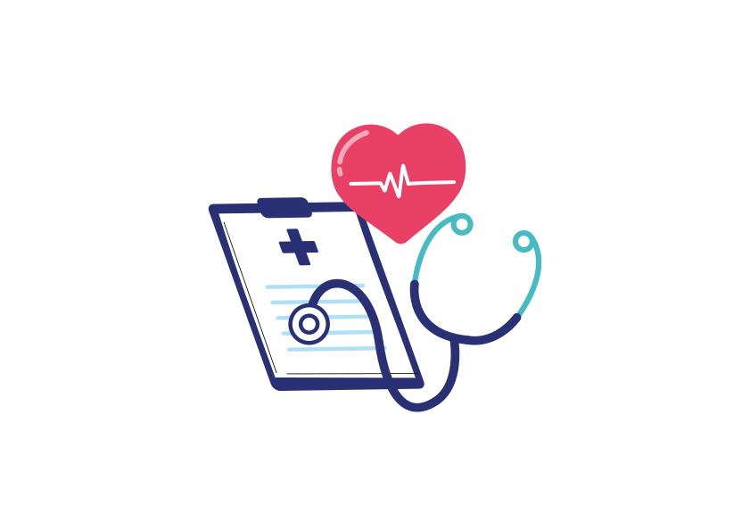
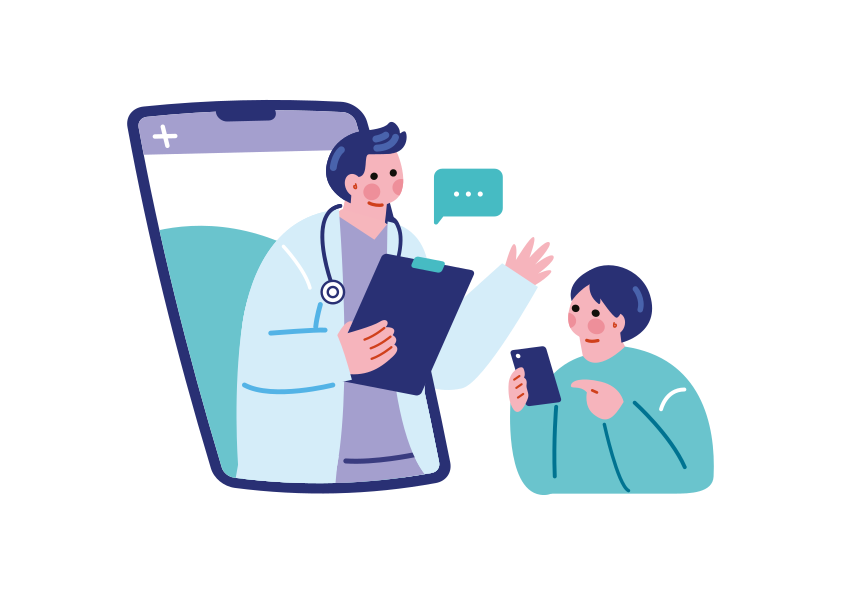
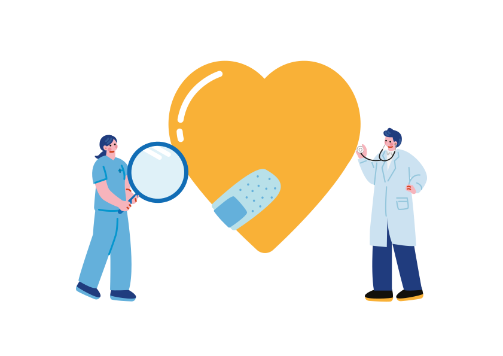
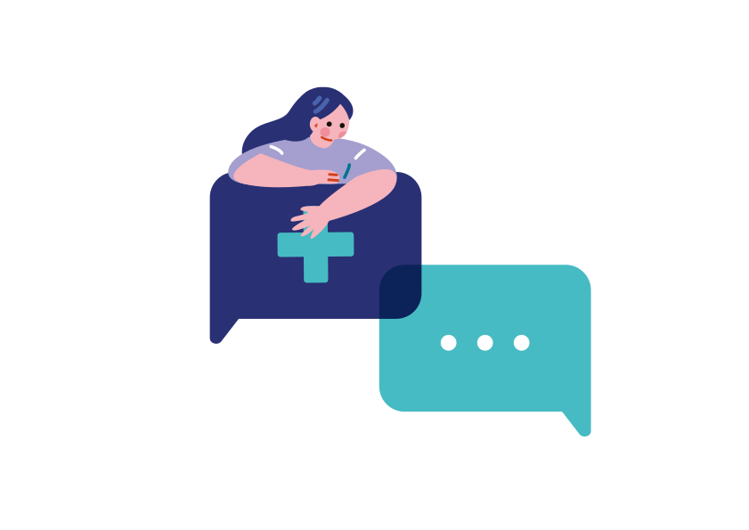
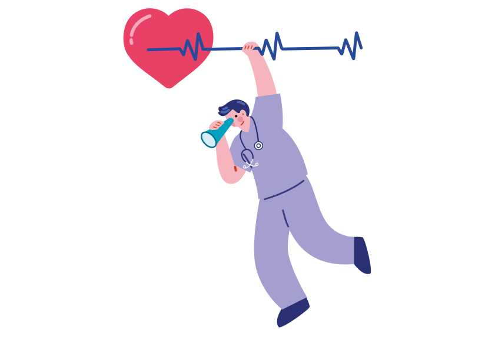
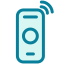

Alertas de emergência
Notificações para contatos de confiança quando o sistema identifica uma possível situação de risco, com informações úteis para agir.
Como agirUma solução de apoio que integra celular e smartwatch para acompanhar sinais vitais, identificar possíveis quedas e enviar alertas com localização para familiares ou responsáveis.
Prevenção começa com informação.Monitoramento, alertas e apoio em situações de risco.


A SOS Smart propõe uma solução tecnológica de apoio para pessoas em situação de vulnerabilidade, integrando dispositivos móveis e wearables para facilitar o monitoramento e acelerar a resposta diante de possíveis emergências.
A proposta combina leitura de sinais vitais, detecção de quedas e envio de alertas automáticos com localização para contatos de confiança. O objetivo é ampliar a capacidade de pedir ajuda, inclusive em áreas com conectividade limitada, conforme a infraestrutura disponível.
Descubra o que nos moveConheça os pilares da proposta SOS Smart: acompanhar indicadores, reconhecer situações de risco e facilitar o acionamento de uma rede de apoio.

Notificações para contatos de confiança quando o sistema identifica uma possível situação de risco, com informações úteis para agir.
Como agir
A proposta integra dispositivos para acompanhar leituras de sinais vitais e identificar alterações que mereçam atenção.
Conheça a proposta
Identificação de possíveis quedas e envio de alertas geolocalizados para ajudar a rede de apoio a localizar a pessoa.
Ver orientaçõesEm uma situação urgente, manter a calma e acionar o serviço correto pode fazer diferença. Não espere por respostas de um site quando houver risco imediato.
SAMU 192 No Brasil, o SAMU atende urgências e emergências médicas.Observe o ambiente e não se coloque em perigo ao tentar ajudar.
Ligue para o serviço de emergência e siga as orientações do atendente.

Informe localização, o que aconteceu e as condições observadas.
A detecção automática pode falhar e não substitui supervisão ou atendimento profissional. Em risco imediato no Brasil, ligue para o SAMU (192). A operação sem internet depende de tecnologias de comunicação compatíveis e não deve ser presumida em todos os locais.
A tecnologia pode ajudar a encurtar o caminho entre a identificação de um risco e o pedido de ajuda. Conectividade e configuração adequadas são essenciais para o funcionamento dos alertas.
Mantenha água por perto e adapte a ingestão às suas necessidades e orientações profissionais.
Horários regulares e um ambiente tranquilo podem contribuir para uma noite de descanso melhor.
Escolha atividades adequadas à sua condição física e aumente o ritmo de forma gradual e segura.
Reunimos respostas para entender melhor a proposta da SOS Smart.
Ainda tem dúvidas? Fale conoscoA SOS Smart é uma iniciativa digital voltada à saúde, com foco em tecnologia, informação e prevenção. Os recursos específicos dependem das funcionalidades disponibilizadas pela plataforma.
Não. O conteúdo do site é informativo e não substitui diagnóstico, tratamento ou orientação individualizada de profissionais habilitados.
No Brasil, ligue para o SAMU pelo 192 em urgências médicas. Informe o local e siga as instruções do atendente. Em perigo imediato, não dependa de um formulário ou de uma resposta online.
Use o formulário desta página para preparar uma mensagem. Como este projeto é uma versão estática, o envio real depende de conectar um serviço de formulário ou backend.
Envie sua mensagem ou dúvida. O formulário abre seu aplicativo de e-mail com o texto preenchido, sem enviar dados a um servidor.